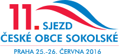

Moje práce v Sokole
Aktualizováno 2016-05-10
Již skoro tři roky pracuji v Ústřední škole České obce sokolské.
Na čem v současnosti pracuji
Připravované akce
- náhradní zkoušky školení Instruktor parkouru
- školení II. třídy Instruktor parkouru (a.k.a. Instruktor volnočasových sportovních aktivit se zaměřením na parkour)
- školení Cvičitel zdravotní tělesné výchovy III. třídy
- školení Trenér skoků na trampolíně III. třídy
- seminář Street Workout
- seminář Noha a její ploska
- seminář Polohová relaxace
Chystané publikace
- kniha Rok ve cvičebních jednotkách RDPD
- metodické listy na téma funkční trénink
- kniha Parkour a freerunnink ve městě i v tělocvičně
Další projekty
- vylepšení systému elektronického vzdělávání
- podílení se na přípravě 11. sjezdu České obce sokolské

Popis mé pracovní pozice je následující:
Metodická činnost
Po odborné stránce připravuje program pro oblast:
- zdravotní tělesná výchova
- parkour
- hudební pohybové formy
- jóga
- fitness
- další sporty na základě jednání s OS
Zodpovídá:
- za složení lektorského sboru v pověřených oblastech
- za dodržování učebního plánu a osnov
- za sestavení obsahu a struktury vzdělávací akce na základě stanovených vzdělávacích cílů
- za zadání pokynu externím lektorum
- za řádné vedení příslušné pedagogické dokumentace vzdělávací akce a přípravu podkladů pro evidenci
- za rozpracování obsahu vzdělávací akce do minutového programu
- za zpracování vyhodnocení vzdělávací akce
Spolupracuje:
- při zpracování vlastních učebních nebo podpůrných textů pro vzdělávací akce ve svěřených oblastech
- s příslušnými komisemi a sbory odboru všestrannosti a odboru sportu a dále dle pokynů ředitele ÚŠ ČOS
- na zajištění podkladů pro tvorbu pracovních dohod a fakturaci pro externí lektory
Dále:
- sleduje novinky v příslušných oborech a zařazuje je do programu
- připravuje metodické články do časopisu a metodické materiály
Lektorská činnost
- příprava na teoretickou a praktickou výuku na akcích ÚŠ ČOS
- prezentace učiva s přizpůsobením účastníkům kurzu
- motivování účastníků vzdělávacích akcí ÚS ČOS
Organizační činnost
- organizační zajištění přidělených akcí včetně zpracování dokumentace
- pravidelné hlášení výsledků své činnosti ve svěřených úkolech
- identifikování možnosti ke kontinuálnímu zlepšování činnosti a chodu ÚŠ ČOS
- doplňování odborné literatury, vedení evidence knih
- spolupráce s časopisem Sokol
- příprava podkladů pro akreditační řízení vzdělávacích programů
- správa profilu na sociálních sítích
- zajišťování informací o akcích ÚŠ ČOS na webových stránkách
- správa technického zabezpečení evidence a přihlášek účastníků vzdělávacích akcí
- tisk osvědčení
Dále plní úkoly dle pokynů ředitele ÚŠ ČOS
Převážná část mojí pracovní náplně tvoří příprava a organizace vzdělávacích akcí pro cvičitele, kteří cvičí v sokolských jednotách. Za uplynulé tři roky proběhlo pod mým vedením 24 vzdělávacích akcí různého rozsahu a na dalších několika jsem spolupracoval.
Vzdělávací akce, které jsem organizoval
Instruktor parkouru – 150hodinové školení, kromě organizačního zajištění a výuky jsem vytvořil kurikulum a připravil podklady pro akreditování školení MŠMT (18 účastníků)
Cvičitel zdravotní tělesné výchovy II. třídy – 150hodinové školení (21 účastnic)
Cvičitel jógy III. třídy (2 školení, celkem 29 účastníků)
Elixír mládí (2 semináře, celkem 54 účastníků)
Parkour Workshop (2 semináře, celkem 53 účastníků)
Napětí a dotyk (4 semináře, celkem 50 účastníků)
Noha a její ploska (2 semináře, celkem 40 účastníků)
Aktivní po padesátce (38 účastníků)
Aerobik a hudební formy s náčiním (38 účastníků)
Zdravotníci zotavovacích akcí (školení a seminář, celkem 29 účastníků)
seminář Jóga pro zdravá záda (26 účastníků)
Rope Skipping (25 účastníků)
Atletika v sokolské všestrannosti (22 účastníků)
Kruhový trénink pro muže (20 účastníků)
Hooping (17 účastníků)
Zranění ve cvičebních jednotkách sportovní všestrannosti (11 účastníků)
Další akce a projekty, na kterých jsem se podílel
- webové stránky Ústřední školy a stránky akcí na sokol.cz
- e-learning - výběr a testování výukového prostředí
- správa sociálních médií (facebook)
-
on-line formulář pro přihlašování na akce Ústřední školy (a navazující systém zpracování těchto údajů)
- semináře Parkour a Rope skipping pro Vzdělávací středisko Olomouc (výuka)
-
doprovodný program (parkour, testy zdatnosti a netradiční hry) pro akci Sokolské Brno (výuka, organizace)
- školení v Bulharsku pro Bulgaria BeActive a WOW sport fitness (výuka v angličtině)
- Výročí 90 let otevření Tyršova domu (organizace, technické zajištění)
- Mezinárodní seminář cvičení rodičů a dětí PaCH 2014 (organizace, technické zajištění)
- Prázdninová škola mladých pomahatelů (výuka, organizace)
- Seminář parkouru a rope skippingu pro pedagogy na Tělo Olomouc (výuka)
- Projekt Move Week 2014 (organizační zajištění)
Absolvoval jsem kurzy:
- Nutriční poradenství v praxi (FTVS UK)
- Seminář o práci s dobrovolníky na VŠTVS Palestra
- Google Apps
Další činnosti, kterým jsem se věnoval
Tvorba metodických materiálů, včetně tvorby nebo zprostředkování grafiky, úprava licenční smlouvy pro publikaci pod licencí Creative Commons.
- Metodické listy o parkouru
- Metodické listy o rope skippingu
- článek Vizuální zpětná vazba při nácviku sportovní techniky
Správa CRM databází našich zákazníků (účastníků akcí) a subdodavatelů (lektorů, pronajímatelů prostor) včetně mailingového listu v MailChimpu
Spolupráce na návrhu technického řešení zvažovaného kreditového systému vzdělávání cvičitelů ČEské obce sokolské
Spolupráce s odborem všestrannosti ČOS na projektu standardizace vybavení (příprava a zpracování dat on-line formuláře)
Marketingový průzkum zájmu o vzdělávací akce
Analýza a dokumentace pracovních procesů v rámci ústřední školy
Zavedení nástrojů pro lepší komunikaci a management projektů v rámci týmu (Slack, Trello)
Typografická úprava knihy Rok ve cvičebních jednotkách rodičů a dětí a předškolních dětí
Připomínkování a úprava osnov pro vzdělávání cvičitelů III. třídy
Překlady z a do angličtiny a korektury dokumentů
Analýza dat s pomocí Google Fusion Tables pro výroční zprávu Ústřední školy
Zajištění nákupu technického vybavení a literatury pro Ústřední školu
Příprava emailových newsletterů vč. správy přihlašovacích formulářů a importu dat v MailChimpu
Fotografování na pořádaných vzdělávacích akcích
Technická podpora pro aplikace Google v rámci týmu Ústřední školy a školení zaměstnanců Odboru všestrannosti ČOS
Testování redakčního systému webových stránek novy.sokol.eu pro předsednictvo ČOS